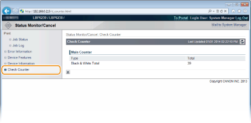

0KU8-038
|
|
|
O nome do aplicativo que solicitou a impressão pode ser adicionado ao nome de arquivo dos documentos impressos.
|
Você pode verificar uma lista de até cinco documentos que estão atualmente sendo impressos ou aguardando impressão.

Você pode clicar em [Cancel] para excluir o trabalho de impressão de um documento que está sendo impresso ou aguardando impressão.
|
|
|
Clique em [Job Number] para exibir informações detalhadas sobre um documento. Por exemplo, você pode verificar o nome de usuário e a contagem da página de impressão do documento.
Se ocorre um erro, mas a impressão pode continuar, [Continue/Retry] aparece em [Job Operation]. Você pode clicar em [Continue/Retry] para apagar o erro e retomar a impressão. Todavia, a impressão pode não ser executada devidamente se você usar a função Continuar/Tentar Novamente para apagar o erro e retomar a impressão.
|
O histórico exibe uma lista de até 50 documentos impressos.

Quando ocorre um erro, você pode exibir esta página clicando na mensagem exibida sob [Error Information] na Página do Portal (página principal). Página Portal (página principal)

Esta página exibe a velocidade máxima de impressão.

Esta página exibe informações sobre a impressora e o administrador de sistema. Esta informação é definida em [System Management] na página [Settings/Registration] (Alterando as configurações da impressora).

Esta página exibe uma contagem total de páginas de documentos que foram impressos.
